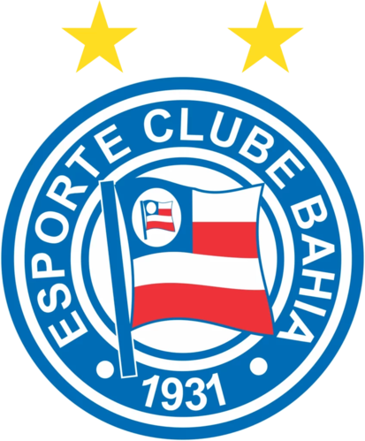

🏆 História dos principais títulos do Esporte Clube Bahia
O Bahia é um dos clubes mais tradicionais do Nordeste e do Brasil. Fundado em 1931, em Salvador, construiu uma história marcada por pioneirismo e grandes conquistas nacionais.
⭐ Campeonatos Brasileiros (2)
🏆 1959 – Taça Brasil
Primeiro grande título nacional do clube.
Competição que reunia os campeões estaduais.
O Bahia venceu o poderoso Santos Futebol Clube de Pelé na final.
Esse título deu ao Bahia a vaga para disputar a primeira Libertadores da história do Brasil.
👉 Foi o primeiro campeão brasileiro reconhecido oficialmente.
🏆 1988 – Campeonato Brasileiro
O segundo título nacional veio quase 30 anos depois.
Final contra o Sport Club Internacional.
Vitória por 2x1 na Fonte Nova lotada.
Time tinha destaques como Bobô, Zé Carlos e Charles.
👉 Até hoje é o único clube do Nordeste bicampeão brasileiro.
🏆 Copa do Nordeste (4 títulos)
O Bahia é um dos maiores campeões da região:
2001
2002
2017
2021
Na final de 2021 venceu o Ceará Sporting Club.
🏆 Campeonatos Baianos (50+ títulos)
O Bahia é o maior campeão estadual da Bahia, com mais de 50 conquistas do:
Campeonato Baiano
🏟️ Fonte Nova e a força da torcida
O estádio histórico do clube é a
Itaipava Arena Fonte Nova, em Salvador.
A torcida é conhecida como Nação Tricolor e é uma das maiores do Nordeste.